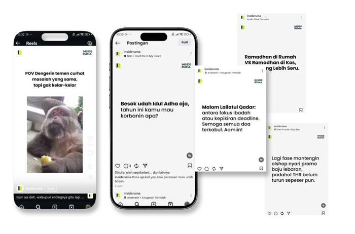

InsideRuma
Bangun Kehadiran Digital InsideRuma yang Profesional dan Konsisten
Adsbangda membantu InsideRuma mengembangkan kehadiran digital melalui strategi yang terintegrasi, mulai dari pengelolaan media sosial, kampanye iklan digital, hingga pengembangan materi konten dan branding.
Selama kerja sama berlangsung, kami berfokus pada peningkatan kredibilitas brand, memperluas jangkauan audiens, serta membangun fondasi pemasaran digital yang konsisten untuk mendukung pertumbuhan bisnis InsideRuma.
Tentang Proyek
Wellner Consulting merupakan firma konsultan pajak yang melayani perusahaan, UMKM, maupun individu dalam berbagai kebutuhan perpajakan dan kepatuhan bisnis.
Untuk memperkuat kehadiran digitalnya, Adsbangda dipercaya sebagai partner kreatif yang menangani berbagai kebutuhan pemasaran digital secara menyeluruh. Mulai dari produksi konten edukasi perpajakan, pengelolaan kampanye Meta Ads, hingga pengembangan materi branding perusahaan.
Pendekatan ini membantu Wellner Consulting membangun citra profesional sekaligus meningkatkan konsistensi komunikasi di berbagai platform digital.
Konten segar dan relevan buat audiens muda, bangun komunitas media platform.
Sosial Media Content

Bangun kehadiran digital media platform yang fokus ke audiens muda — konten segar dan relevan buat naikin engagement dan komunitas.
Workflow Project
Kami menerapkan proses kerja yang terstruktur untuk memastikan setiap aktivitas pemasaran digital berjalan efektif dan menghasilkan output yang konsisten.
Discovery
Research
Content Planning
Design
Campaign Setup
Publishing
Monitoring
Optimization
Reporting
Tools & Software
Dalam proyek Wellner Consulting, kami menggunakan berbagai software profesional untuk mendukung proses produksi konten, pengembangan website, pengelolaan kampanye, hingga proses kerja berbasis AI secara menyeluruh.
Creative & Design
Website Development
AI & Productivity
Digital Advertising
Project Impact
Melalui kombinasi strategi konten, iklan digital, dan branding visual, Wellner Consulting kini memiliki kehadiran digital yang lebih konsisten dan profesional.
Pendekatan ini membantu perusahaan menjangkau audiens yang lebih luas, memperkuat kredibilitas brand, serta membangun fondasi pemasaran digital yang dapat terus dikembangkan seiring pertumbuhan bisnis.
Mau Hasil Serupa untuk Bisnis Kamu?
Yuk diskusiin strategi digital marketing yang pas buat brand kamu — konsultasi awal gratis.
Mulai Proyek →